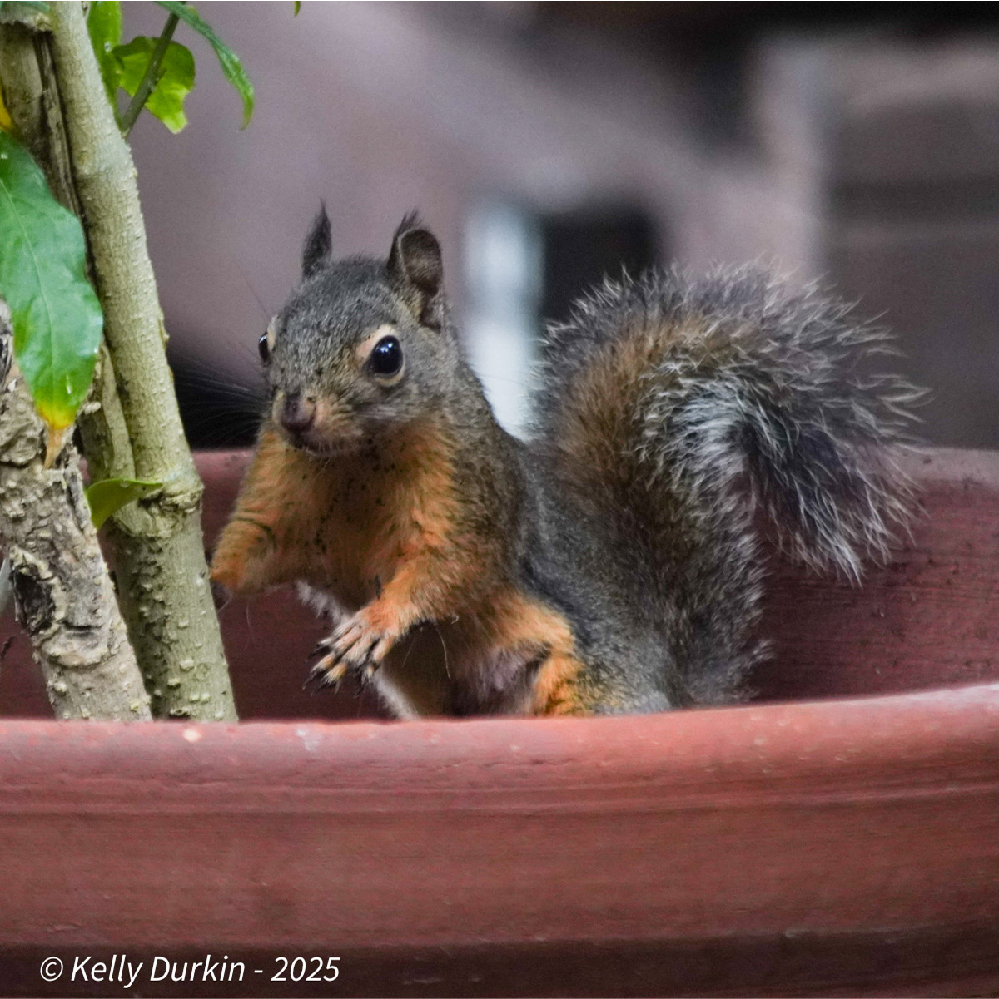
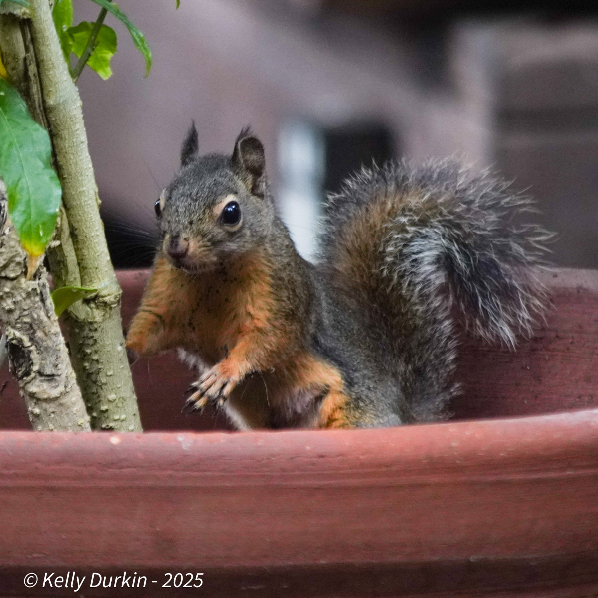
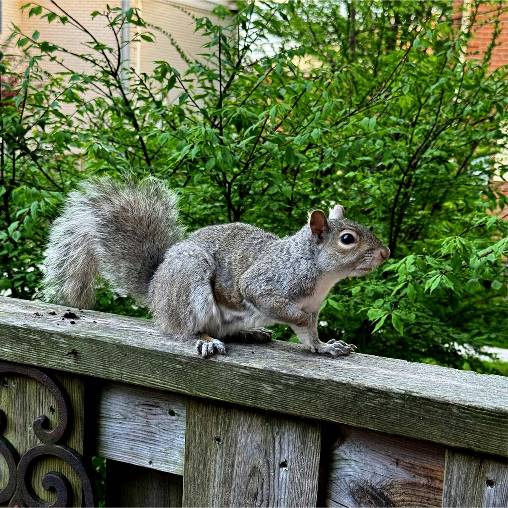
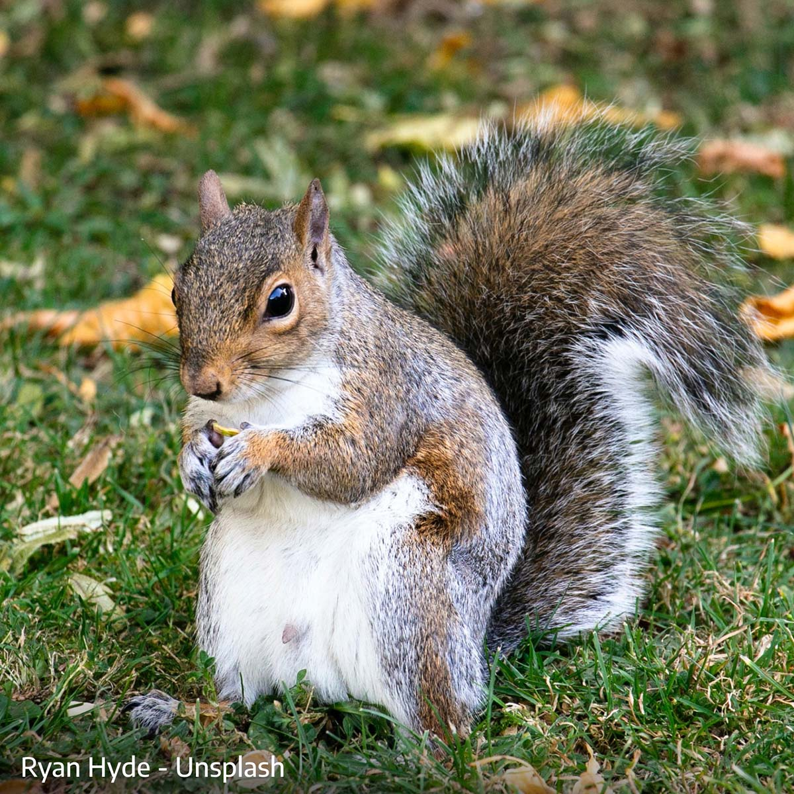
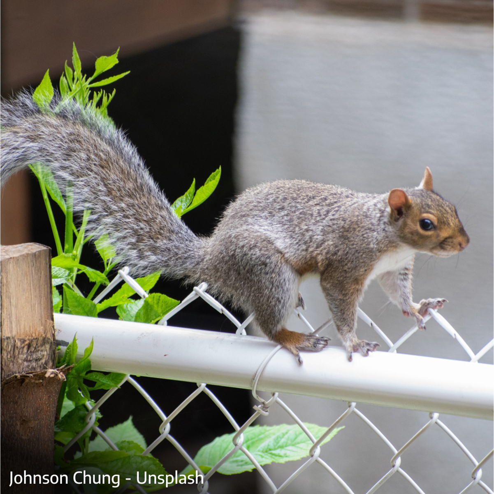
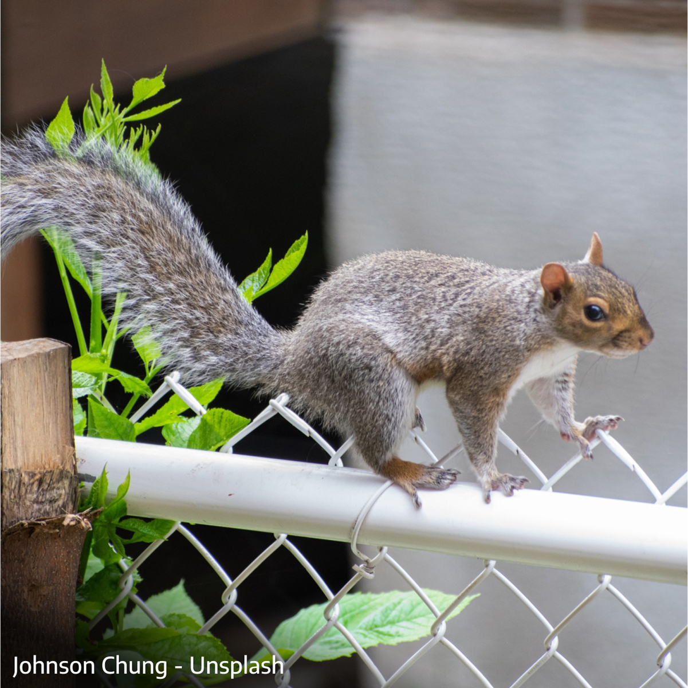
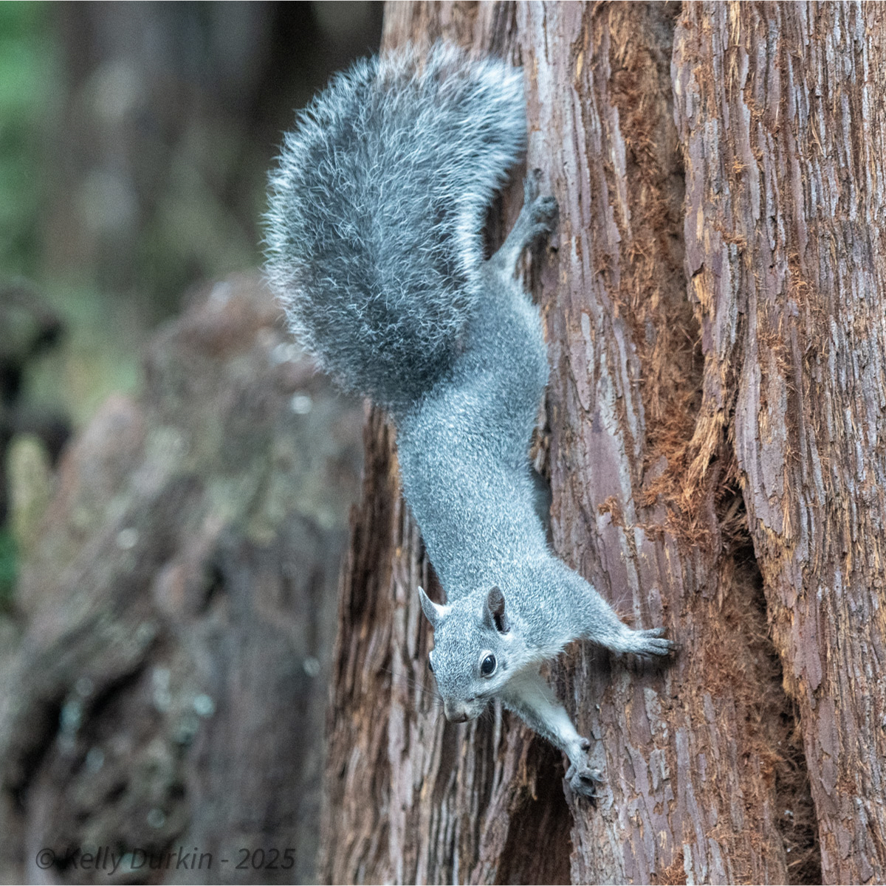

Two Native / Two Introduced
Douglas Squirrel (native) = smallest
Western (native) and Eastern (introduced) Gray squirrels = similar, middle size
Fox Squirrel (introduced) = largest

The Douglas squirrel (and flying squirrel) are noticeably smaller and easily distinguished from the others.
First, let's take a look at the Douglas Squirrel, then we'll compare and contrast the other three.
The Douglas Squirrel
Douglas Squirrels are significantly smaller - about half the size of the other three species.


 

Four Douglas Squirrels
Douglas squirrels' belly fur changes color seasonally
- creamy beige in Winter and Spring, burnt orange in late Summer and Fall -
- Douglas squirrels have a distinct white eye ring.
- Douglas squirrels are lightning fast and can turn 180 deg. on a dime.
- Feisty - they scold humans and other animals with a piercing rapid chirping
- Vocalizations can be highly varied with low chitters and nearly melodic trills
Comparing the Three Larger Squirrels
WESTERN GRAY vs. EASTERN GRAY vs. FOX SQUIRREL
Coloration
Western Gray squirrels are one solid steel gray tone - from nose to tail (dorsal fur).

- white belly
- no mottling or fur color variation
- full, feathery all-gray tail
Eastern Gray squirrels can have mottled gray or multi-toned dorsal fur.
all eastern gray squirrels:




Four Eastern Gray Squirrels
- white belly
- brown fur on face around eyes and nose
- relatively thinner and shorter tail than the Western
- melanistic variant is entirely black
Fox Squirrels have grizzled charcoal gray dorsal fur.

- orange belly
- solid chestnut-orange face
- thick and long orange and black tail
Discovering the Differences
Walking
From a distance, the two gray species look remarkably similar in shape and size.
The Fox squirrel is a larger-bodied animal.
- The grays share a similar quick bounding gait. Fox squirrels have a lazier ambling gait.
- Behaviorally, however, all three differ: Western Grays are shy and prefer to stay in trees; Eastern Grays are bolder and often navigate fences and roofs; the Fox Squirrel is comfortable almost anywhere, even on the ground.
 


Western Gray, Eastern Gray and Fox Squirrel
Sitting
Fox Squirrels have orange bellies, both of the gray squirrel bellies are white.


Western Gray, Eastern Gray and Fox Squirrel
Perching
Public sympathy complicates management of charismatic invasive species.



Western Gray, Eastern Gray and Fox Squirrel
“However, eradications of charismatic mammals may encounter strong opposition… Considering the case study of the eastern grey squirrel… when the model was expanded to integrate the attitude of citizens… citizens’ support was limited, and this resulted in a reduced overall utility of intervention.” La Morgia, Paoloni & Genovesi, 2016. PubMed
“The social acceptance of attractive invasive species with charisma is higher than that of unattractive invasive species… An appearance perceived as beautiful or cute can make the management of species invasions more difficult, because then public support is often lacking.” CABI News, summarizing research in Frontiers in Ecology and the Environment
Head Close-up
Western Grays do not have brown fur on their faces, but the other two always do.


Western Gray, Eastern Gray and Fox Squirrel
Misidentification
Stock Photo Sites Tend to Misidentify Western Grays
Searching for 'Western Gray squirrel' on stock photo sites or wildlife blogs will likely yield the wrong squirrel.
Quick Audit: What We Found
- Adobe Stock: Only 9 out of 57 images were true Western Grays. The rest were Fox, Eastern, Douglas, or ground squirrels—some mislabeled Sciurus griseus.
- Shutterstock: 13 out of 47 images labeled as “Western Gray Squirrel” were correct.
- iStock: Just 4 of the first 20 images were correct. Many were vaguely labeled “gray squirrel,” while others were clearly misidentified and even tagged Sciurus griseus.
- Google Image Search (top 20): 16 of 20 were correctly labeled Western Gray.
- anomalia.bio.com: 1 of 6 featured images was a correctly identified Western Gray
- Scientific & commercial websites: Sites like BecauseTees.com, CABI, and ScientificLib routinely show Fox or Eastern Grays while discussing Western Gray Squirrels.


Stock Photo Screenshots – Correctly identified Western Gray squirrels outlined in green
Click to Expand Photos
Even images labeled with the scientific name, Sciurius griseus, often show the wrong species.
The opposite can also occur.
Here, a Western Gray photo is incorrectly used on a UC Riverside faculty member's page.

The image is a Western Gray (Sciurus griseus ), not an Eastern Gray(Sciurus carolinensis)
Click to Expand Photo
Why It Matters
If we can’t reliably identify native squirrels—even in published “educational” content—how can we protect them?
Accurate ID isn’t trivia. It’s the foundation for reporting sightings, managing habitat, enforcing protections, and educating the public. If we mistake the invaders for the natives, we risk losing the real Western Gray.